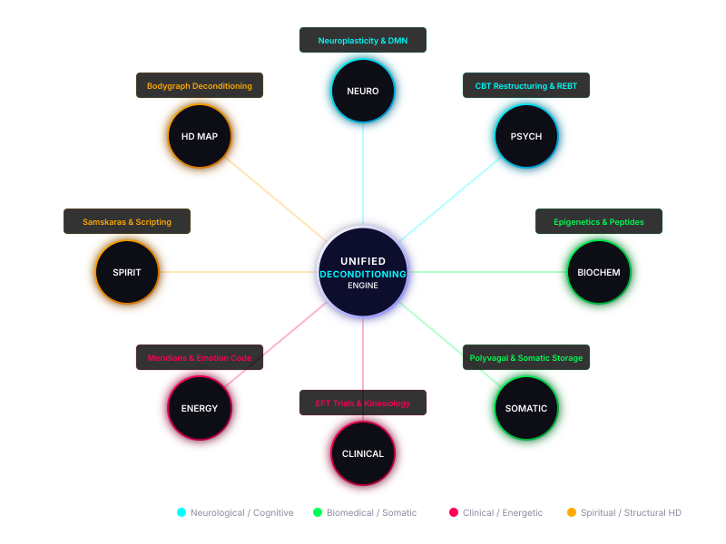

The synthesis of neuroscience, psychology, biochemistry, somatic therapy, clinical studies, energy systems, and Human Design.
Human beliefs are not merely abstract, conceptual thoughts. They are biological configurations, biochemical filters, somatic imprints, and electromagnetic structures that govern how we interact with the world. When we experience limiting patterns—whether they present as chronic self-doubt, career hurdles, or relational friction—we are seeing the output of deeply embedded subconscious conditioning.
This study outlines the scientific, clinical, and energetic mechanisms behind belief deprogramming. It maps how a belief transitions from a neurological pathway down into cellular biology, how it registers within somatic states, how it can be diagnosed via the mechanics of Human Design, and how it is systematically cleared and installed.

In classical neuroscience, beliefs are represented by neural pathways—networks of synaptic connections that fire together in response to external triggers. When a belief is held for decades, the synaptic pathways governing that belief become myelinated, facilitating rapid, automatic transmission that bypasses conscious scrutiny[2].
Two primary neurological mechanisms govern belief change:
Dr. Lisa Feldman Barrett's Constructed Emotion Theory demonstrates that the brain does not passively react to sensory input; it actively predicts and constructs reality based on past beliefs and models[1]. Changing the core belief alters the brain's predictive model, fundamentally changing the physical experience of reality.
For decades, neuroscience held that long-term memories — including core beliefs — were permanently consolidated and immutable. This assumption was overturned in 2000 when Dr. Joseph LeDoux's lab at NYU demonstrated memory reconsolidation: when a memory is reactivated (recalled), it enters a labile, destabilized state for approximately 4–6 hours. During this window, the memory can be updated, weakened, or overwritten before it re-stabilizes[20].
This discovery has profound implications for belief work:
Human studies by Dr. Daniela Schiller (2010) confirmed that reconsolidation-based interventions can permanently reduce fear responses without the need for extinction training[21]. This three-step process — reactivate → destabilize → re-encode — is the neural mechanism underlying the Belief Deprogrammer's Remove-Replace-Repeat loop.
Simply repeating positive statements without first reactivating and destabilizing the old belief does not trigger reconsolidation. The old neural pathway remains dominant. This is why the Belief Deprogrammer explicitly pairs removal (reactivation + destabilization) with replacement (new encoding) — mirroring the brain's own biological protocol for updating stored beliefs.
Modern clinical psychology addresses beliefs through the lens of cognitive restructuring, pioneered by Dr. Aaron Beck in Cognitive Behavioral Therapy (CBT)[4]. According to the cognitive model, core beliefs (schemas) form the foundation of our cognitive hierarchy. These schemas generate intermediate beliefs (rules and assumptions), which in turn generate automatic thoughts in daily life.
Similarly, Rational Emotive Behavior Therapy (REBT), developed by Dr. Albert Ellis, utilizes the **ABC Model**[5]:
Belief work targets the "B" layer directly. Rather than attempting to manage emotional consequences (C) or control life events (A), restructuring the underlying belief naturally neutralizes negative automatic thoughts and emotional reactivity. Furthermore, cognitive research into implicit associations shows that these beliefs reside in subconscious associative networks, which require structured, repeated stimulus-response interventions to rewrite[6].
Subconscious beliefs do not remain locked in the brain; they translate into cellular biochemistry. The field of psychoneuroimmunology has mapped the exact pathways through which mental states regulate physiological health.
Dr. Bruce Lipton, a pioneer in stem cell biology, demonstrated that cell behavior is controlled by environmental signals rather than static DNA[7]. Subconscious beliefs act as subjective filters, shaping the nervous system's output of hormones, neurotransmitters, and inflammatory cytokines, which directly regulate gene expression (epigenetics).
This biochemical transmission is governed by:
Limiting beliefs and trapped emotions are stored in the body's physical architecture. When the brain experiences an overwhelming threat or emotional stressor, the energy of that response is locked into subcortical structures (like the amygdala and brainstem) and physical somatic tissues, manifesting as chronic muscular tension, restricted breathing, and visceral imbalances.
Somatic clinicians emphasize that cognitive dialogue is insufficient to resolve these patterns:
Modern clinical psychology and psychiatry offer multiple evidence-based protocols for belief restructuring. These modalities have been validated through randomized controlled trials, meta-analyses, and neuroimaging studies, providing a rigorous empirical foundation for belief deprogramming.
Developed by Dr. Aaron Beck, CBT is the most extensively researched psychotherapy for belief modification. A 2018 meta-analysis of over 100 studies found large effect sizes across depression, anxiety, PTSD, and other conditions[22]. CBT's core techniques — Socratic questioning, behavioral experiments, downward arrow, and core belief worksheets — directly target the cognitive hierarchy: automatic thoughts → intermediate beliefs → core schemas. The "Downward Arrow" technique drills from surface thoughts to root beliefs ("If that's true, what does it mean about you?"), precisely identifying the deep beliefs that the Belief Deprogrammer maps through HD center analysis.
Eye Movement Desensitization and Reprocessing (EMDR), developed by Dr. Francine Shapiro in 1987, is recognized by the WHO (2013), APA (2017), and VA/DoD as an evidence-based treatment for PTSD[23]. EMDR's Adaptive Information Processing (AIP) model demonstrates that unprocessed traumatic memories become the foundation of maladaptive beliefs — "I am not safe," "I am powerless." Through bilateral stimulation (eye movements, alternating tones), EMDR activates the brain's natural processing system, linking disturbing memories with adaptive information. The protocol explicitly identifies and transforms "Negative Cognitions" (limiting beliefs) into "Positive Cognitions" (empowering beliefs): "I am powerless" → "I have choices now."
Developed by Dr. Steven C. Hayes, ACT proposes a radical alternative: rather than challenging or replacing limiting beliefs, change your relationship to them[24]. Through cognitive defusion techniques — prefixing thoughts with "I'm having the thought that...," naming the story, or visualizing thoughts as leaves on a stream — the individual steps back from identification with belief content. This creates the "witness perspective" (Self-as-Context) from which beliefs can be observed without being acted upon. A 2020 review of 20 meta-analyses confirmed ACT's efficacy across anxiety, depression, chronic pain, and substance use, with particular strength in improving quality of life and values-based living[25].
Used to communicate directly with the subconscious mind, muscle testing measures the motor system's response to cognitive statement congruence. When an individual makes a statement that is aligned with their subconscious beliefs, the motor cortex remains stable. If the statement is incongruent (representing a subconscious conflict), the nervous system experiences a transient disruption in motor control, causing muscle weakness.
A double-blind clinical study by Dr. David Monti in 1999 published in Perceptual and Motor Skills demonstrated a statistically significant correlation between muscle testing results and congruent vs. incongruent statements, validating the mechanism as a reliable physiological indicator of subconscious state[13].
EFT involves tapping on specific acupressure points on the face and upper body while focusing on a limiting belief or emotional stressor. Clinical trials have shown that EFT rapidly down-regulates amygdala activity and lowers serum cortisol levels.
A landmark study by Dr. Dawson Bach in 2019 demonstrated that clinical EFT produced significant reductions in cortisol, heart rate, and blood pressure alongside improvements in anxiety and depression, validating the somatic-neurological link in belief work[14].
Energy psychology bridges clinical science with ancient energetic traditions, recognizing that thoughts and emotions possess distinct electromagnetic frequencies. Traditional Chinese Medicine (TCM) has mapped the human body's meridian network for millennia, detailing how specific meridians act as low-resistance electrical pathways[15].
In TCM, emotions are directly linked to organ systems:
Dr. Bradley Nelson, creator of the Emotion Code and Belief Code, integrated this model with modern applied kinesiology[16]. He identified that unresolved emotional stress becomes "trapped emotions"—discrete spheres of electromagnetic energy lodged in somatic tissues. The Emotion Code methodology releases these energies by utilizing muscle testing to identify the specific emotion and running a magnet along the **Governing Meridian** (the primary yang energy channel in TCM, running from the tailbone, up the spine, and over the head to the upper lip) to release the electrical charge from the body's magnetic field.
Spiritual traditions have long recognized that beliefs shape our experience of the divine and our connection to consciousness. In these traditions, belief deprogramming is viewed as the removal of blockages that prevent the realization of our true nature.
While various modalities offer tools for clearing beliefs, the Human Design system provides a highly personalized, mechanical diagnostic map. It identifies precisely *where* conditioning enters an individual's energy field, *what* specific themes that conditioning will take, and *how* to bypass the conditioned mind to live in alignment.
| HD Center | Conditioning Theme | Not-Self Subconscious Story |
|---|---|---|
| Head Center | Mental Pressure | "I must solve everyone else's questions to be free of pressure." |
| Ajna Center | Intellectual Certainty | "I must be certain and have a fixed opinion to feel safe." |
| Throat Center | Attention & Action | "I must manifest, speak, or attract attention to be valuable." |
| G-Center | Identity & Love | "I must find love, direction, and my true self externally." |
| Heart/Ego | Self-Worth & Proof | "I must prove my worthiness and compete to survive." |
| Sacral Center | Vitality & Exhaustion | "I must keep working and doing, even when I am exhausted." |
| Solar Plexus | Emotional Avoidance | "I must keep the peace and avoid conflict at all costs." |
| Spleen Center | Survival Security | "I must hold onto things, relationships, or habits that are bad for me." |
| Root Center | Stress & Adrenaline | "I must rush to complete tasks to get rid of the pressure." |
In the Human Design bodygraph, the nine centers dictate energy distribution[12]:
By mapping an individual's chart, we identify which centers are undefined, allowing us to pinpoint the exact locations of their primary conditioning. Specific **Hanging Gates** within these centers act as specific behavioral filters, dictating the unique narratives and limiting rules the individual has developed. Deconditioning is the process of using one's **Strategy and Authority** to bypass the mind's conditioned narratives, returning defined and undefined centers to their correct, clean state.
Integrating these eight perspectives yields a unified deprogramming framework based on a simple, three-part loop:
THE DEPROGRAMMING LOOP
1. Remove: Identify the subconscious limiting belief using the Human Design bodygraph and somatic tracking. Consciously declare its removal and command the subconscious to release the somatic, chemical, and energetic imprint.
2. Replace: Immediately install a positive, empowering counter-belief aligned with your design. This must be phrased in the active, present tense, free of negatives, and designed to install new synaptic connections.
3. Repeat: Rehearse daily. The mind and body require consistent signaling to restructure neural networks, clear epigenetic pathways, and complete somatic releases.
In our work, we operate under a foundational tenet: Slow is the fast way. While the modern self-help landscape promises instant, violent breakthroughs and sudden, cathartic shifts, these rapid transformations can be highly destabilizing to the nervous system. A sudden collapse of core beliefs often triggers a severe sympathetic stress response (fight/flight) or dorsal shutdown (depression, freeze), leading to rash decisions and relational disruptions.
Belief deprogramming is structured as a gentle, compounding process. By clearing five beliefs a day over a period of 10 to 240 days (depending on the workbook depth), the nervous system is allowed to restructure itself incrementally and safely. As you clear your conditioning, you gradually stop projecting your unresolved wounds onto others. Your transition is quiet, sustainable, and permanent. Your healing becomes a source of healing for everyone around you.